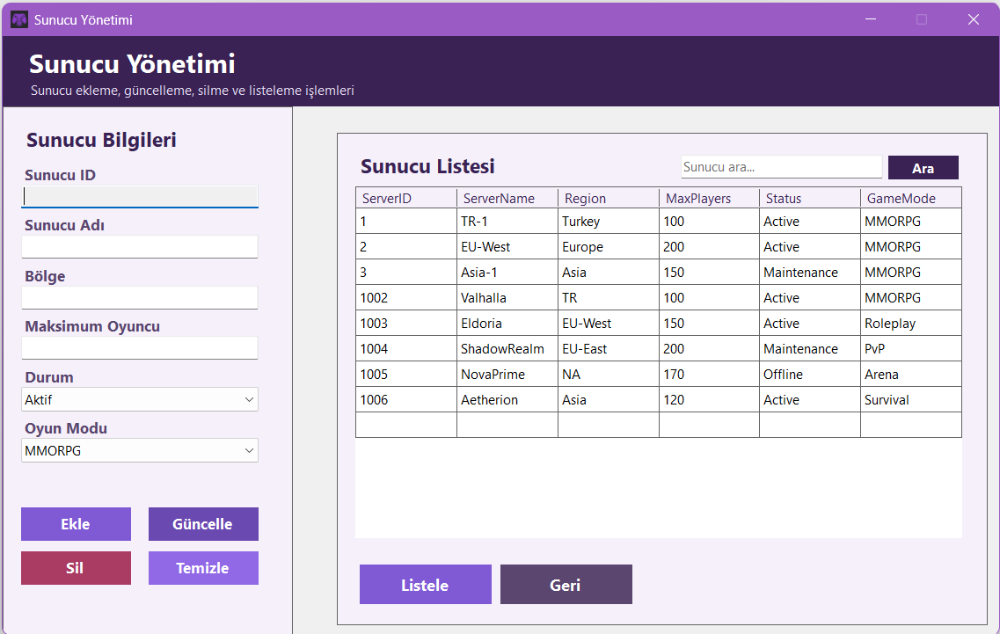

Online Oyun Sunucu Yönetim Sistemi
SQL Server veri katmanı
Bu SQL Server projesi, çevrimiçi oyun sunucusu yönetim uygulamasının veri katmanıdır. C# Windows Forms paneli sunucu ve oyuncu kayıtlarını bu veritabanından gösterir. Galeride veritabanı sonuçlarını paneldeki görünümleriyle inceleyebilirsin.
- Geliştirme durumu
- Durum bilgisi bekleniyor
- Teknolojiler
Sunucu doluluk raporu
- Rapor ekranı, oyuncu sayısını ve doluluk oranını hesaplamak için LEFT JOIN, COUNT, GROUP BY ve CASE kullanıldığını gösteriyor.
- Tablo oyuncusu olmayan sunucuları da sıfırla gösteriyor. Sonuçların yanında CSV dışa aktarma seçeneği bulunuyor.
Proje medyası


